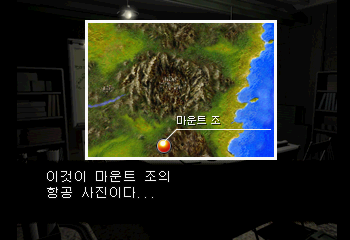

조이드 제국 VS 공화국 - 메카 생체의 유전자
Zoids - Teikoku vs Kyouwakoku - Meka Seitai no Idenshi
게임 소개
TOMY가 2000년에 일본에서 발매한 PlayStation용 턴제 전략 RPG입니다. 금속 생명체인 '조이드'가 사는 행성 Zi를 무대로, 헬릭 공화국과 제네바스 제국 가운데 한쪽을 골라 부대를 지휘합니다.
임무를 완수하면 새 조이드가 해금되고, 구매한 기체를 부대에 편입할 수 있습니다. 지도에서 적과 맞붙으면 3D 턴제 교전으로 전환됩니다. 기체의 EP가 바닥나면 공격할 수 없어서, 교전 전에 남은 에너지를 살펴야 합니다.
한글패치 v0.7
대사와 메뉴, 정지 이미지 85개, 스토리 영상 10편의 자막과 스태프 크레딧 직책을 한글화했습니다.
일본판 SLPS-02982용입니다. 원본 BIN 해시와 패치 적용 방법은 ZIP의 readme.txt에서 확인할 수 있습니다.
